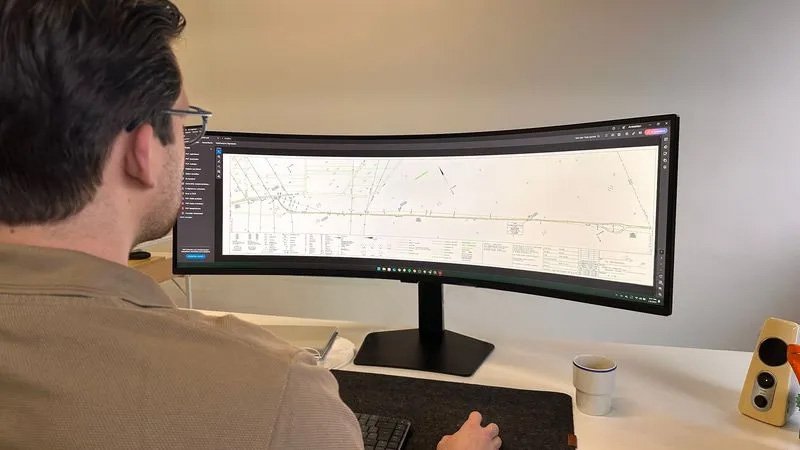
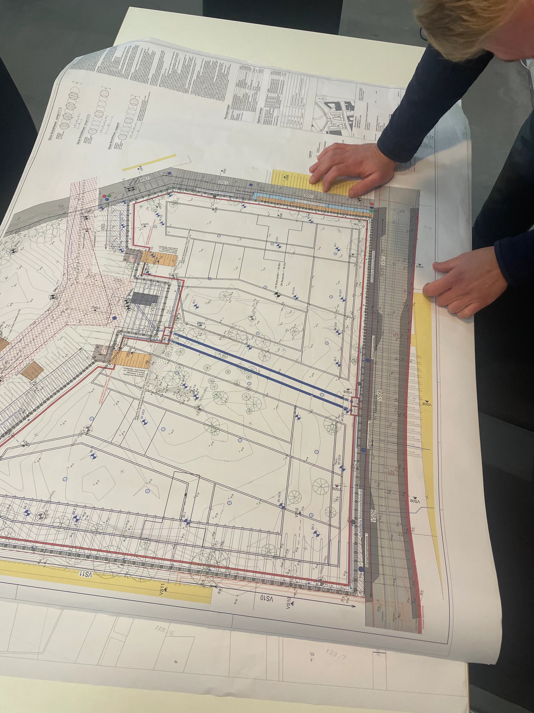

Über uns
Meet our team
Lernen Sie unsere Experten kennen – spezialisiert auf digitale Trassenpläne für den Tiefbau, präzise, effizient und zukunftsorientiert!
Lukas Ikenmeyer
Geschäftsführer
M.Eng Geoinformation & Kommunaltechnik
Liron Schwick
Geschäftsführer
Tomer Maith
Projektleiter
Jesse Yang
Projektleiter
Frederic Axt
Camila Botero Soto
Nadine Haschem Agha
Daniel Trefilov
Alexander Niphut

Felix Knopp
Emma
How we started
Die Idee zu Trassify entstand, wie so oft, aus einer echten Herausforderung. Bei einem Bauprojekt stießen wir auf ein großes Problem: Leitungspläne. Was wir bekamen, war handgezeichnete Kunstwerke aus den 80ern, unleserliche Scans oder ein modernes PDF, das aber komplett widersprüchliche Informationen enthielt. Das brachte uns zum Nachdenken: Wie konnte es sein, dass in einer zunehmend digitalen Welt unterirdische Leitungspläne so schlecht organisiert sind? Unsere Recherche zeigte, dass wir nicht allein sind – Bauunternehmen, Ingenieurbüros und Träger öffentlicher Belange kämpfen mit denselben Problemen. Es war klar: Hier musste sich etwas ändern. So entstand Trassify.


Unsere Mission
Unsere Mission war von Anfang an klar – veraltete und unstrukturierte Leitungspläne zu digitalisieren und in ein verlässliches Gesamtbild zu integrieren. Dabei verbinden wir technologische Präzision mit einem tiefen Verständnis für die praktischen Anforderungen unserer Kunden. Denn wir glauben, dass präzise und digitale Pläne nicht nur Bauvorhaben erleichtern, sondern die Grundlage für die Infrastruktur von morgen schaffen. Trassify steht für Innovation, Zusammenarbeit und die Vision, das Unsichtbare sichtbar zu machen.
Unsere Werte
Expertise
Unsere Datenlösungen sind das Ergebnis jahrelanger Erfahrung und tiefgehender Fachkenntnis. Wir bringen die nötige Expertise mit, um maßgeschneiderte, präzise Ergebnisse zu liefern, die genau Ihren Anforderungen entsprechen.
Zusammenarbeit
Die Ziele unserer Kunden stehen im Mittelpunkt. Wir hören zu, verstehen Ihre Bedürfnisse und wachsen gemeinsam an den großen Herausforderungen, die moderne Bauprojekte und eine immer komplexer werdende Welt mit sich bringen.
Verlässlichkeit
Vertrauen ist die Grundlage unserer Arbeit. Unsere Kunden können sich darauf verlassen, dass ihre Daten in höchster Qualität und pünktlich geliefert werden, ganz gleich, wie komplex oder zeitkritisch das Projekt ist. Unsere Arbeit ist wie eine Uhr: präzise, zuverlässig und immer im richtigen Moment.
Innovation
Wir setzen auf modernste Technologien und kreative Lösungen, um für unsere Kunden immer einen Schritt voraus zu sein. Mit jeder Lieferung verbessern wir unser Handwerk, um Ihnen die bestmöglichen Ergebnisse zu bieten. Es gibt immer etwas Neues zu entdecken – seien Sie gespannt!
Leichtigkeit
Wir vereinfachen Ihre Arbeit, indem wir komplizierte Datenmassen auf die für Sie wesentlichen Informationen zusammenfassen. Sie erhalten smarten Überblick über die Ihr Vorhaben betreffenden Leitungen.
Lernen Sie uns persönlich kennen
Mit einem einzigen, übersichtlichen Trassenplan von Trassify reduzieren Sie Planungsfehler und gewinnen Zeit für andere Aufgaben. Holen Sie sich jetzt Ihre individuelle Beratung – kostenlos und unverbindlich!
Sie haben Fragen?
Warum wurde Trassify gegründet?
Die Digitalisierung nimmt mittlerweile auch in konservativeren Branchen wie dem Bauwesen Fahrt auf.
Die Gründer von Trassify beobachten zunehmende Technologie-Offenheit und Investitionen in allen Phasen eines Bauwerks: In der Planung, in der Bauphase, im Bauwerksbetrieb. Dabei gewinnen die entsprechenden digitalen Werkzeuge in Form von Hard- und Software an Popularität. Zum Engpass werden auf der einen Seite die Fachkräfte und Experten, die die Werkzeuge anwenden, und auf der anderen Seite Daten, mit denen die Systeme gefüttert werden: Planungssoftware wie CADs oder GIS, Ausführungssysteme wie Maschinensteuerungen oder Vermessungsinstrumente, oder IST-Modelle - alle Systeme benötigen Daten als Input.
Trassify sieht sich als Vermittler und Erzeuger von Daten in für seine Kunden optimal nutzbare Formate.
Ist ein Gesamttrassenplan vollständig?
Im Zweifel: Nein.
Natürlich nimmt Trassify jeden Hinweis auf Leitungen auf und arbeitet ihn in die Ergebnisse mit ein.
Allerdings existiert in Deutschland kein rechtsgültiges Leitungskataster. Dazu kann es erfahrungsgemäß immer, überall und selbst den professionellsten Leitungseigentümern vorkommen, dass Einmessungen fehlerhaft, gar nicht stattfinden oder Informationen verloren gehen. Deswegen ist jeder Verdacht und Hinweis auf Vorhandensein von Leitungen ernst zu nehmen: Hinweis- und Warnschilder, Gaspfähle, Marken und Straßenkappen, Schacht- und Schieberdeckel oder Schachteinbauten. Schlussendlich muss der jeweilige Grundstückseigentümer wissen, welche bzw. wessen Leitungen in seinem Grundstück verlegt sind.
Wie lange dauert die Leistungserbringung?
Das hängt grundsätzlich von der Größe Ihres Projektes und der damit einhergehenden Datenmenge ab. Sofern nicht anders in Angebot oder Auftrag kommuniziert, kann von einer Lieferdauer von 2 Wochen ausgegangen werden.
In welchen Formaten erhalte ich die Ergebnisse / Leitungsdaten?
Trassify bevorzugt und empfiehlt den Umgang mit QGIS-Formaten wie .shp oder .gpkq.
Nach Kundenwunsch können aber auch Google Earth Dateien (kml/kmz), CAD-Daten (dxf/dwg), klassische PDF-Pläne oder XML-Dateien erzeugt werden.
Trassify passt sich dabei auf die Bedürfnisse seiner Kunden an.
Welche Erfahrung hat Trassify?
Mehr als 10 Jahre Facherfahrung im Tief- und Straßenbau, Vermessung, der Anwendung von GIS- und CAD Software sowie Geodatenbanken, unterstützt von theoretischem Wissen aus Bachelor- und Masterabschlüssen im Studiengang Geoinformation & Kommunaltechnik der Frankfurt University of Applied Sciences.
Die Facherfahrung wird beflügelt durch akademische und praktische Erfahrung aus den Bereichen Betriebswirtschaft, IT-Implementierung und Projektmanagement.
Wie arbeitet Trassify?
Mehr als 10 Jahre Facherfahrung im Tief- und Straßenbau, Vermessung, der Anwendung von GIS- und CAD Software sowie Geodatenbanken, unterstützt von theoretischem Wissen aus Bachelor- und Masterabschlüssen im Studiengang Geoinformation & Kommunaltechnik der Frankfurt University of Applied Sciences.
Die Facherfahrung wird beflügelt durch akademische und praktische Erfahrung in den Bereichen Betriebswirtschaft, IT-Implementierung und Projektmanagement.
Wie genau sind die Leitungsdaten?
Sie sollten von 0,2 bis 1,0 m Lagegenauigkeit ausgehen. Die Lage kann nicht genauer erfasst werden, als die Ursprungsquelle es hergibt. Bei Indizien auf ungenauere Lage informiert Trassify spätestens per projektabschließendem Protokoll. Erfahrungsgemäß kann es aus verschiedenen Gründen auch zu größeren Abweichungen kommen, weswegen stets mit größter Sorgfalt gearbeitet werden , und im Zweifel immer der direkt Kontakt zum Leitungseigentümer aufgesucht werden muss.
Gründe für Ungenauigkeiten, die nicht im Einflussbereich von Trassify liegen, sind:
- Alte Pläne -> Veränderung der Bodenverhältnisse
- Nicht-dokumentierte Veränderungen an einer Leitung durch berührende / benachbarte Maßnahmen
- Ungenaue Pläne durch falsche Einmessungen
- Nicht vorhandene Pläne
- Falsche Lage durch falsche Koordinaten-Bezugssysteme
Liefert Trassify 3D- oder BIM-konforme Daten?
Vorerst nicht direkt. Trassify kann den Leitungsobjekten Tiefeninformationen unterschiedlicher Qualität als Attribute beifügen, aus denen wiederum 3D-Informationen abgeleitet werden können.
Zur Erzeugung von BIM-Modellen empfiehlt und vermittelt Trassify gerne auf Partner.